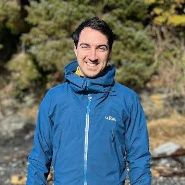
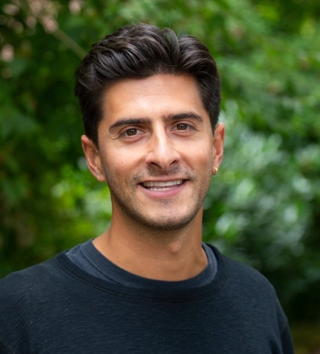

Deven AzevedoProject Director, Open Insights
Read bio
Leads the Open Insights initiative and oversees strategy for the Energy Policy Monitor and modelling platforms.
Our mission
Open Insights combines academic modelling and policy expertise with an open-source framework to provide transparent, replicable and credible policy insights for Canadian energy stakeholders.
Our Core Commitments
Open Source
All models are released open-source and built for and by the research community.
Full Audit Trail
All code, assumptions and data are publicly available for review at any time.
Replicability
Documentation provided to enable other researchers to run the same analysis using the same models.
Our Work
Open Insights has two programs of work: the Energy Policy Monitor and Custom Scenario Analysis.
Independent, timely analysis of Canada’s major energy and climate policy developments. Led by the Open Insights team, it cuts through complexity with clear, independent analysis of what new energy and climate policies mean for Canada’s emissions, energy system, and economy.
View latest assessmentsOpen Insights collaborates with First Nations, civil society organisations, industry groups, and governments to model pressing policy and investment questions and analyse their emissions, energy and economic impacts. All custom analyses are developed and published collaboratively with partners.
If your organisation is interested in collaborative custom scenario analysis, please reach out to Open Insights’ Project Director, Deven Azevedo, at deven@openinsights.ca.
Request a projectHow Open Insights Operates
Open Insights is a collaborative effort between SESIT at the University of Victoria, Energy Modelling Hub, the Energy & Materials Research Group at Simon Fraser University, and Macrocosm Group — each committed to building a more transparent and accessible Canadian modelling ecosystem.
Model Developers
Energy system models and the M3 Platform are developed by researchers at the SESIT Group at the University of Victoria, the EMRG Group at Simon Fraser University, and Macrocosm Group. We welcome collaborations with other academic partners to design new models and tools, advance methods, or apply the models to practical policy questions.
Built for and by the research community
All models are released open-source. We actively collaborate with researchers and analysts committed to transparent, reproducible modelling. If you are interested in collaboration, please reach out to Open Insights’ Project Director, Deven Azevedo.
Discuss collaborationInfrastructure
The Energy Modelling Hub maintains and hosts the modelling infrastructure, including the M3 Platform.
Each EPM and Custom Scenario Analysis assessment uses different models from the M3 Platform. See each assessment for links to the relevant model documentation.
The Framework
Open Insights is the shared banner under which its academic model developers and infrastructure partners collaborate to release transparent, replicable and credible analysis. Open Insights defines common transparency standards and processes that each of its publications will adhere to.
This work is supported by the Clean Prosperity Foundation and the Northpine Foundation.
Our Team
Open Insights Team
Project leadership and delivery.

Deven AzevedoProject Director, Open Insights
Leads the Open Insights initiative and oversees strategy for the Energy Policy Monitor and modelling platforms.
Principal Investigator, SESIT Group — Associate Professor, University of Victoria
Leads the Open Insights modelling programme, overseeing the analysis and validation process. Her research focuses on integrating high penetrations of wind and solar PV onto electricity systems.

Aaron HoyleDirector of EPM
Leads the Energy Policy Monitor, overseeing the assessment process and technical framework.
Model Development Leads
Academic leads developing the energy system models and the M3 Platform.
Research Analyst
SESIT Group
An energy systems modeller specialising in building linkages between models. She leads model linkage work on the Open Insights project, collaborating with SESIT, the Energy Modelling Hub, and the Clean Prosperity Foundation. She holds a PhD from the SESIT Group at the University of Victoria, where her research examined city-scale decarbonisation pathways.
Research Analyst & Post-doctoral Fellow
SESIT Group
An economist whose work bridges economic theory with energy modelling and climate policy analysis. His research spans political economy, the energy transition, and financial strategies at both the firm and government levels, with a particular interest in how institutions and incentives shape development paths and transition trajectories.
Steering Committee
Institutional leadership and strategic oversight.
Executive Director, Energy Modelling Hub
Executive Director, Clean Prosperity Foundation
Get Involved
Sign up for the EPM newsletter or reach out directly to discuss collaborative opportunities.